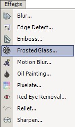
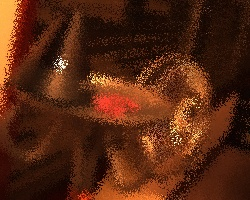

Frosted Glass Effect
|  The Frosted Glass Effect (Effects --> Frosted Glass) is used to give a frosted glass look to an image. If desired, this can act as a different sort of blur.
|
| Original Image | After Frosted Glass |
|
 |